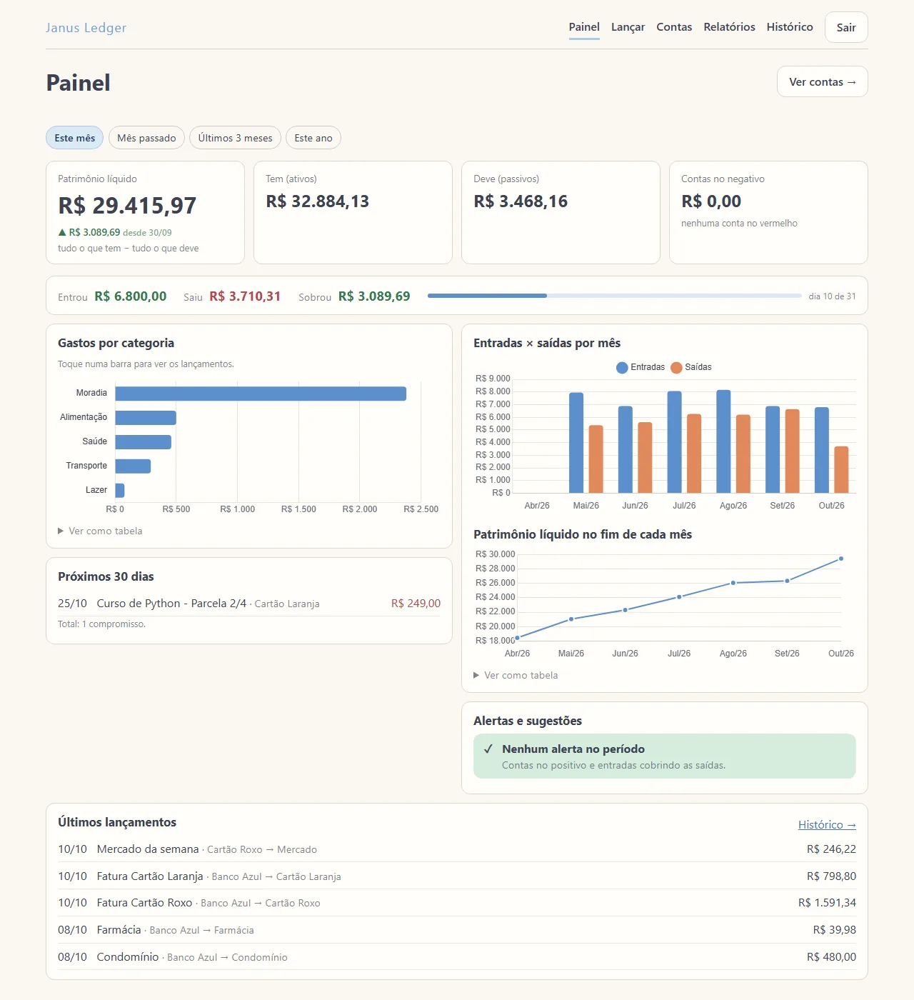
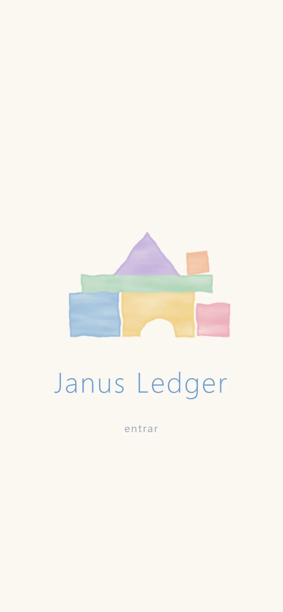
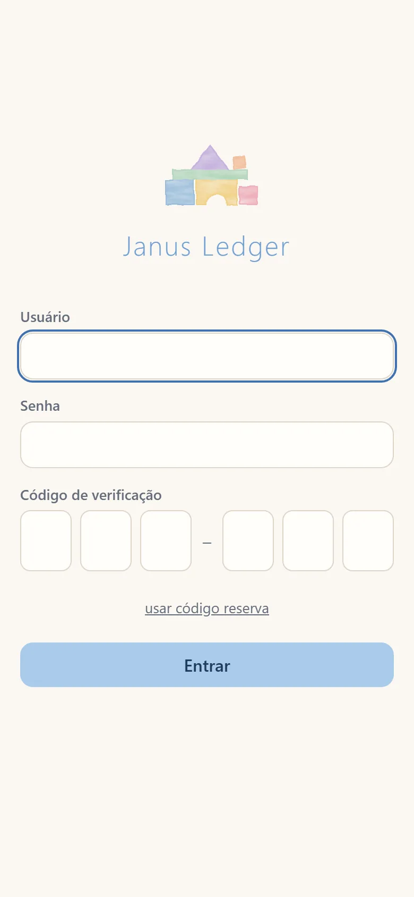
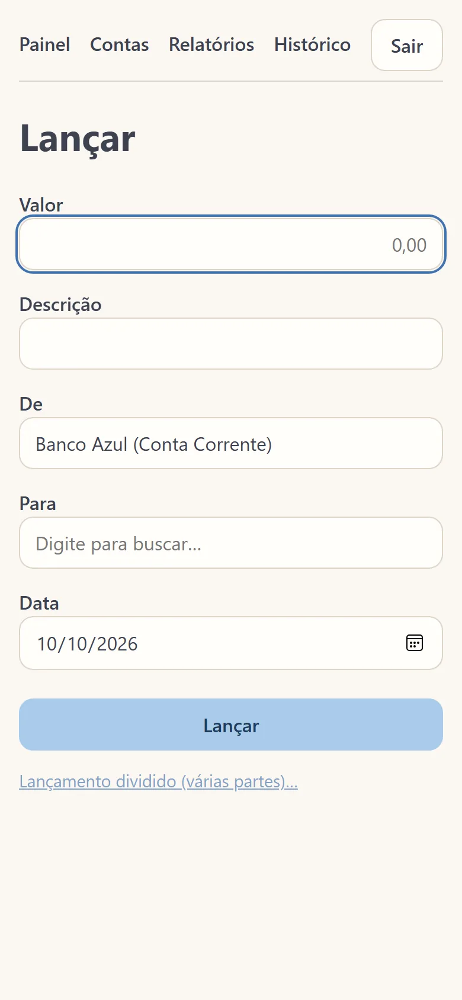
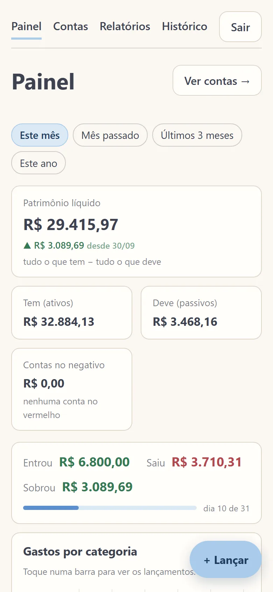
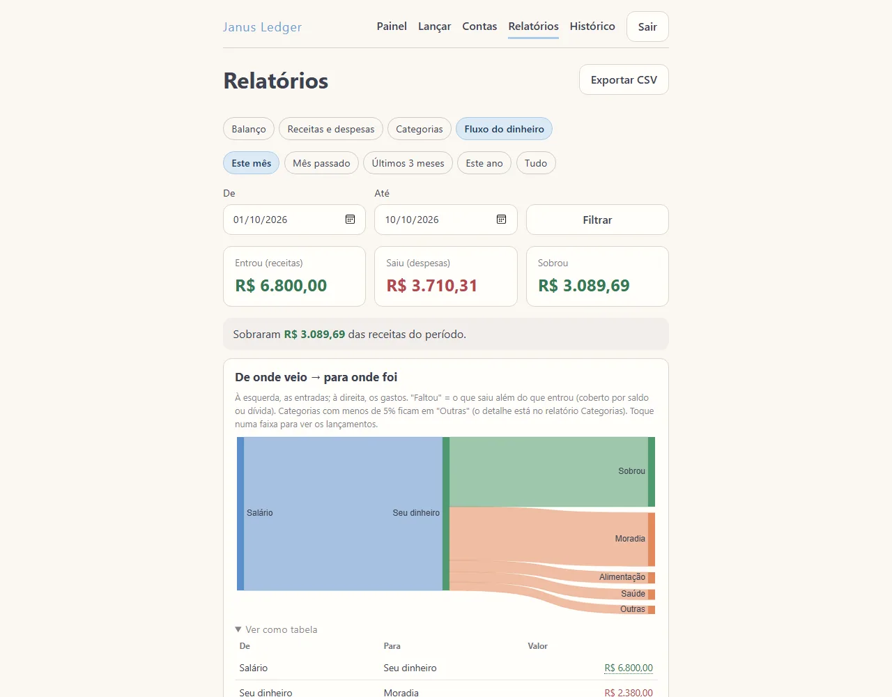
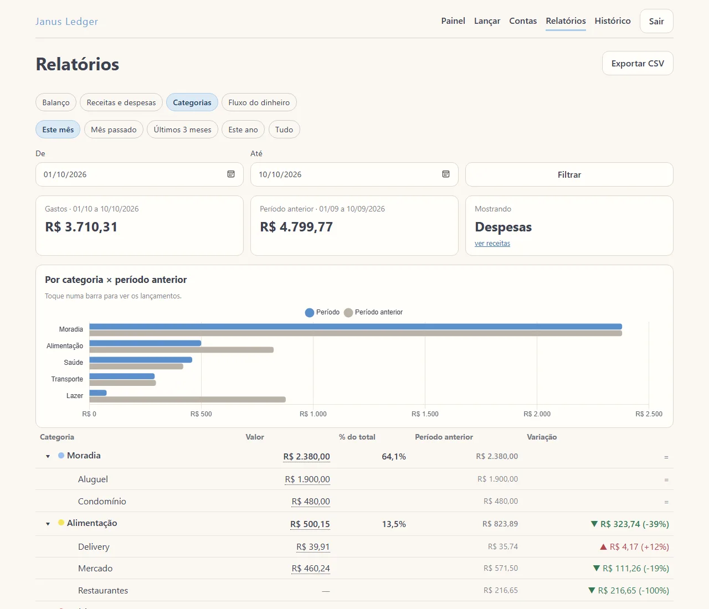
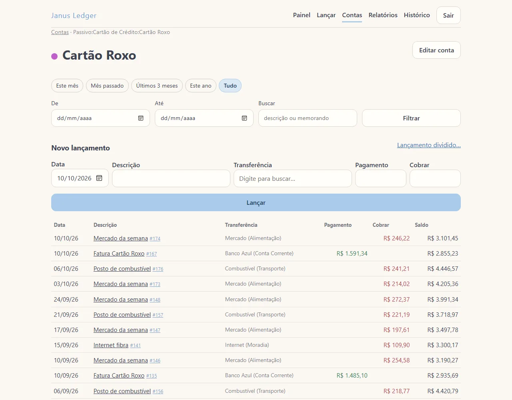
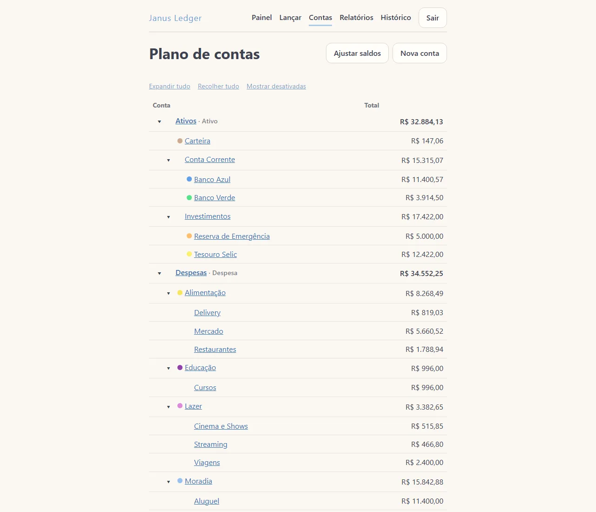

A personal finance web app that replaced GnuCash: double-entry bookkeeping, built so every expense can be logged in seconds, right from the phone.
The source code is private: this app holds real personal financial data. All screenshots use fictitious sample data.
Net worth, income vs. spending, spending by category, upcoming installments and alerts — in one screen.

Installable as an app (PWA). Login with two-factor authentication, and a quick-entry screen: amount, from, to, description — with smart defaults.




Balance sheet, income statement, spending by category (vs. the previous period) and a money-flow Sankey — every chart with a table view and CSV export.


A chart-of-accounts tree and a spreadsheet-like register, with running balance per account.


Small, tested increments — the boring parts done right.
Every transaction must sum to zero — validated in the service layer and again by a deferred PostgreSQL constraint trigger. Money is always Decimal, never float.
Each create/edit/delete stores before/after snapshots, source and device; a database trigger blocks any change to the history.
Login + TOTP 2FA on every page, no public sign-up, login rate limiting, HTTPS with HSTS, secure cookies, secrets in environment variables.
Accent-insensitive account search (Tab confirms), description memory that pre-fills the rest, split transactions with live balance check.
Gunicorn + Nginx under systemd on AWS Lightsail, Let's Encrypt, daily pg_dump backups with rotation, and a one-command deploy that runs the test suite first.
Business rules (the zero-sum rule above all), reports, security and the production static build — plus real-browser checks with headless Edge.